Chumps Chained
A complete timeline of my personal devleopment and growth while making Chumps Chained
June 2024
Intial Idea
- We started with only 2 Co-Leads, Cadence and I.
- An initial small scope to figure out specific mechanics.
- Emphasized wanting a cartoon art style that makes you feel like you’re playing a cartoon. This is my first draft of The Wizard, the main antagonist.
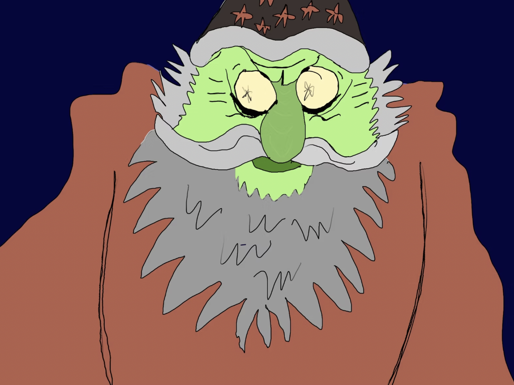
July 2024
Our First Prototypes
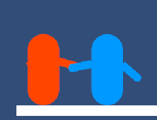
- We had a prototype for the game, where the players were initially locked at the wrist.
- I worked on concept art that emphasizes high contrast between each other and the environment.
- We knew we wanted limited but present friction between the players to make the cooperation a consistent but varied mechanic.
August 2024
Sketching out Ideas
- Right before I started my junior year, we pitched the game to MonRiverGames. A professor owned a non-profit for capstone projects.
- We enlisted a summer student programmer to help us with programming before the semester started.
- I looked ahead to all the ways the chain could affect various parts of the game, such as UI.
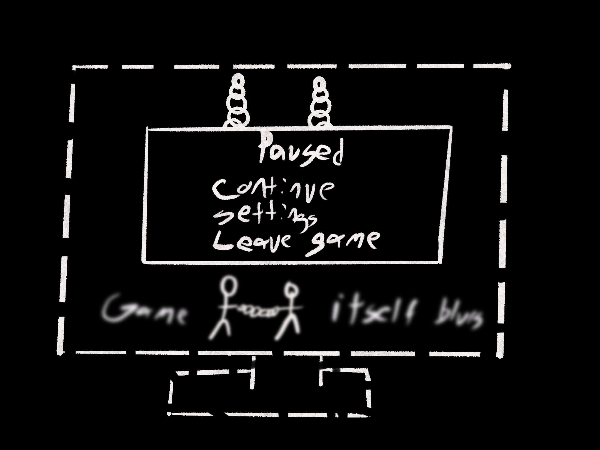
September 2024
Leadership Begins
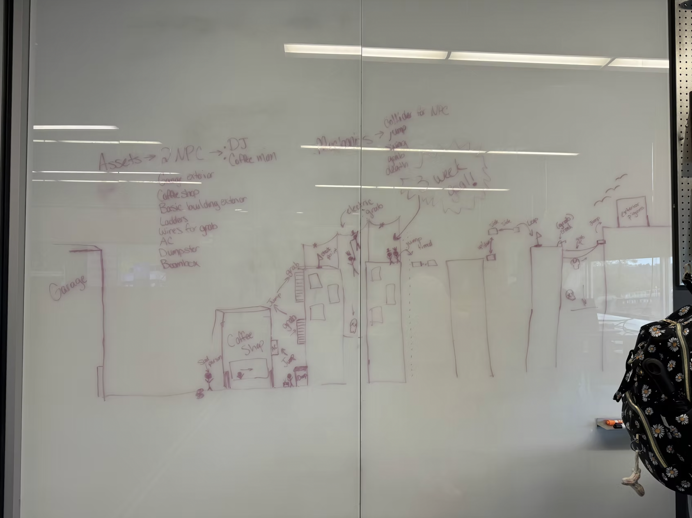
- Although I wasn’t officially enrolled in the course for my Junior year, I co-led 5 Computer Science students and 6 Game Design students. Where they worked on the game for class credit.
- Computer Science and Game Design students met at the same time in different classes, making my role as a lead important to keep those groups working together.
- With the early vision of the project, all the new students envisioned different versions of the final product. I worked rigorously to make sure the vision stayed consistent while adapting to evolving ideas.
October 2024
Make or Break
- This month highlighted the effectiveness of the co-lead structure. I had health problems that made me unable to work for over half of the month. With progress and growth staying steady and vision consistent.
- Communication errors due to different classrooms were an issue, but I minimized them by leading by example and being directly involved in as much art and programming as possible.
- This, in tandem with an art iteration philosophy, helped make the game much more visually coherent. Even if we made art to look partially professional, we did it quickly. To see what visual language, like contrasts or silhouettes, needs improvement.

November 2024
Colors are Crazy
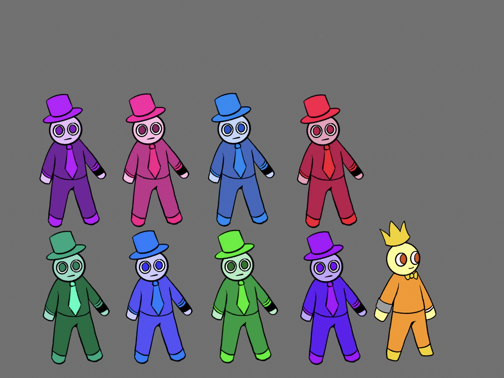
- The art iteration approach made us reconsider the color scheme of a lot of objects, which made the game more readable.
- This gave us more time to work on chain physics before implementing new art or objects that could interfere with its buggy nature.
- I reorganized the GitHub during this time.
December 2024
A Clearer Vision
- I started to prepare to offboard the Game Design students, with the Computer Science students staying for the next semester.
- We started to playtest this month due to having multiple versions of the game that felt wildly different, to see what worked and what didn’t.
- We decided to remove the loose arm mechanic, which caused unnecessary issues and was not important to the overall vision of the game.
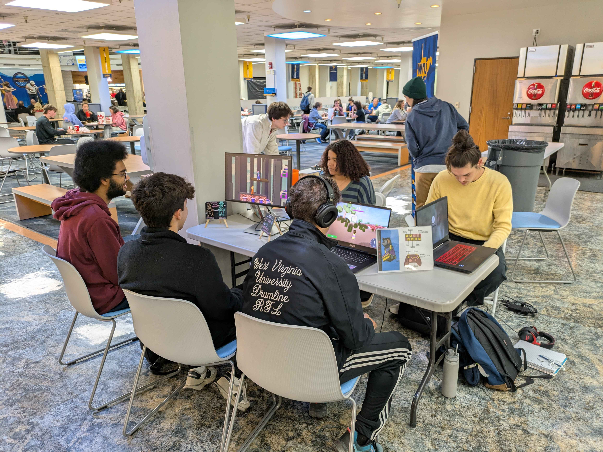
January 2025
Clarity of Action
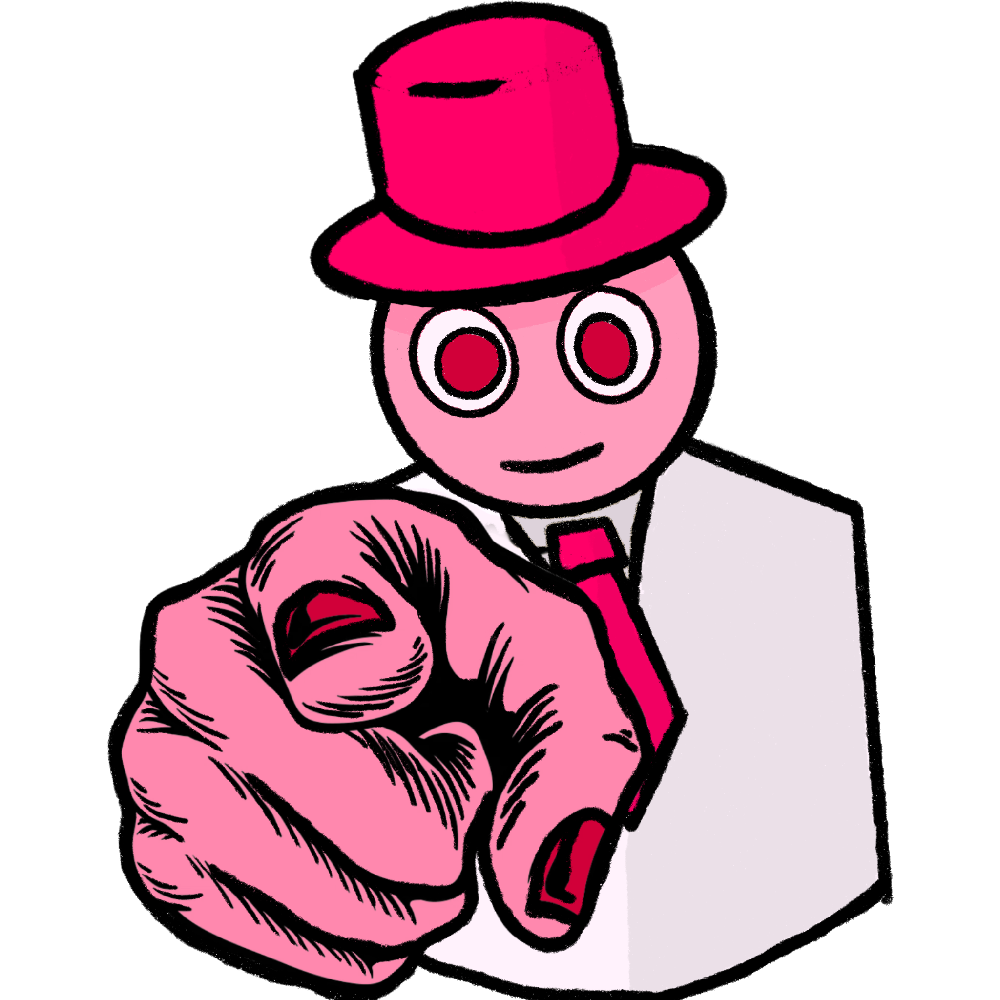
- With the 2nd semester started, we retained our Computer Science group, but 3 new Game Design students replaced the original 6.
- With this new semester, I felt I had grown a lot as a leader, and the project had a much clearer vision.
- We prepared to pitch to MonRiver to see if our game is what would be brought to GDC 2025 on a school trip, and our pitch got accepted.
February 2025
Rush to GDC
- Our chain mechanic was finally fully functional without it breaking.
- I also helped finalize the character animations, making the gameplay feel much smoother and responsive in tandem with the working chain.
- During this time, close to GDC, I had to step up because the other co-lead, Cadence was having health issues during this time and I had to lead the game before GDC.
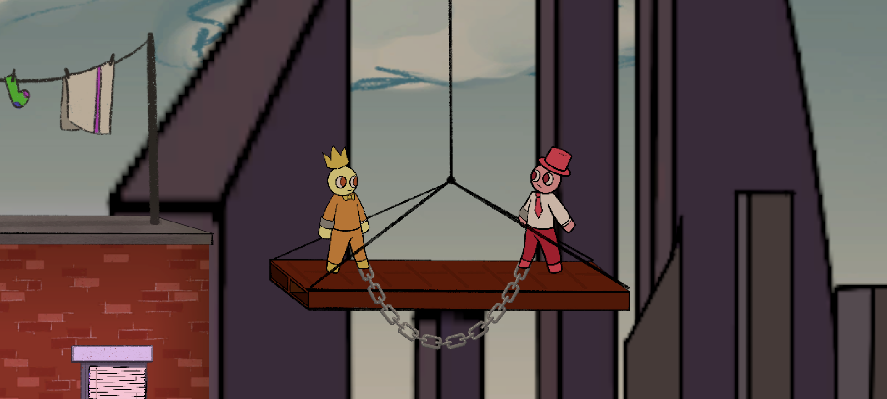
March 2025
Steam Launch & GDC
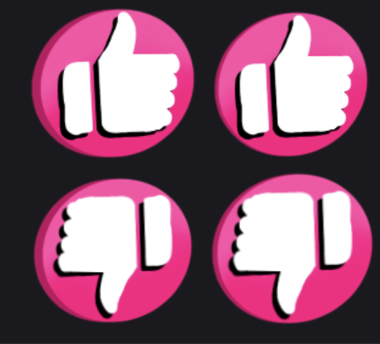
- Our new chain physics allowed us to make unique simulated UI elements for the game.
- The initial Steam page launch was made during this time in preparation for GDC.
- Leading onto mere hours before GDC, I spent as much time as possible coordinating everything to optimize the game and remove as many bugs as possible.
April 2025
Going Forward
- From GDC, I gleaned an enormous amount of feedback that helped give me clarity on how to lead the project further and exactly where to lead the game.
- From here, I made simple visual improvements for readability and accessibility reasons.
- I also focused on how the players react to the game’s mechanics and how to teach the mechanics in a fun but not frustrating manner.
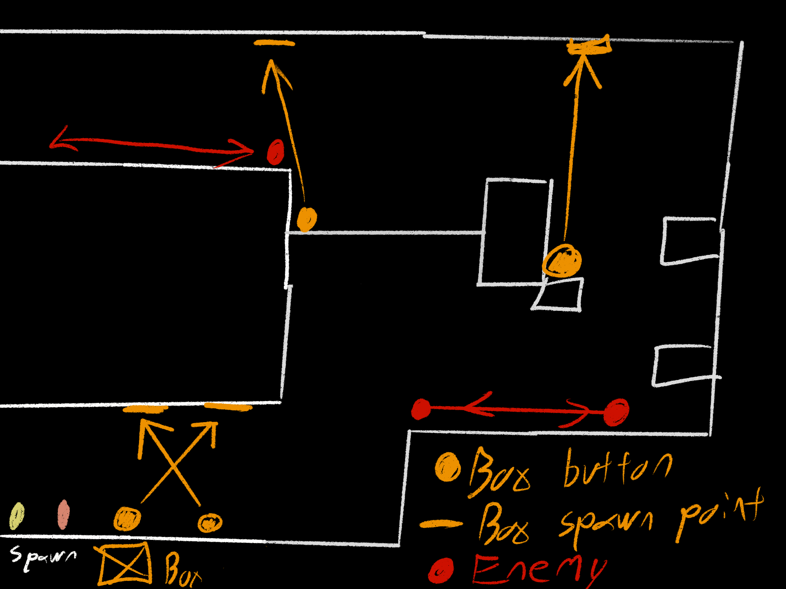
May 2025
Opening Comic
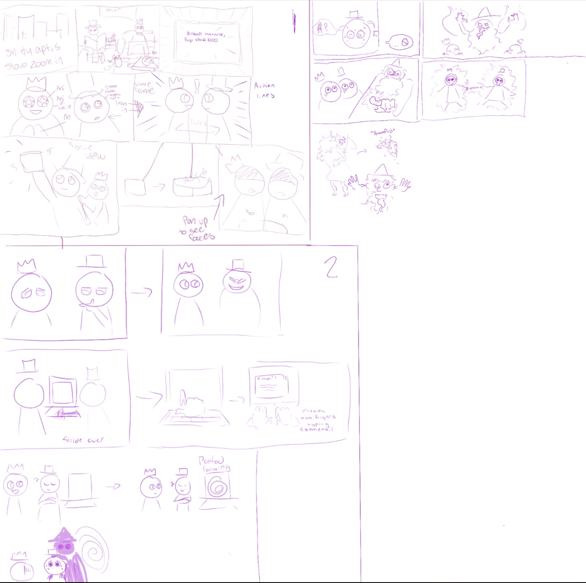
- Started work on an animated opening comic for the game, which establishes the story and plot while establishing the vibe.
- As we had to bid farewell to the Game Design and the Computer Science students, we utilized as much as we could to create proper documentation for new people onboarding the project come the Fall Semester.
June 2025
Growth as a Leader
- Development did slow, but less than expected. We retained 2 Computer Science students and 2 Game Design students who volunteered their time over the summer to help us with the project.
- This gave Cadence and I a sense of pride in being able to hold enough respect that others would volunteer time to help us with our vision, but that they also loved our vision enough to continue helping even when it wasn’t expected of them.
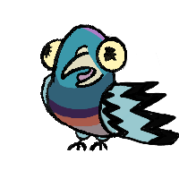
July 2025
Small Details
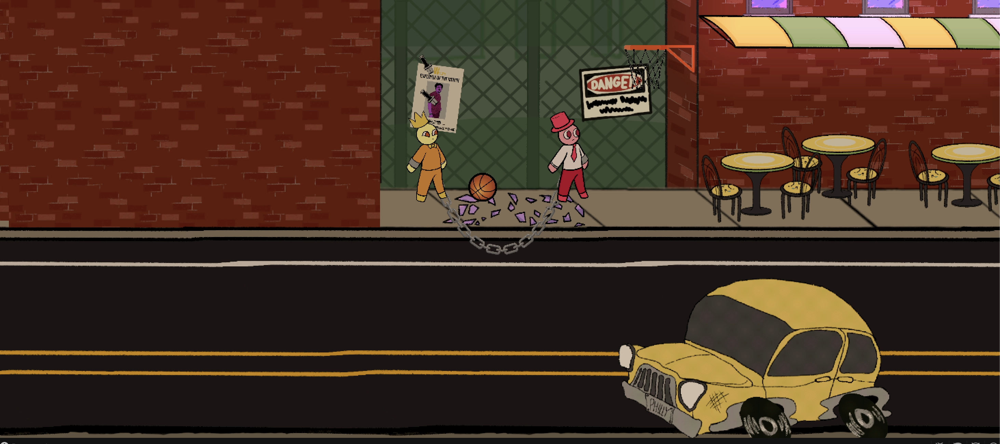
- I redesigned all of our existing levels to have a better flow for the players as they learned mechanics gradually.
- I also hosted several local playtests to see how these new versions of levels taught players and would iterate from there.
August 2025
Launching Back into Action
- With the new semester, we merged our old and new teams together, giving us a team of 13(not including us) to lead.
- This time around, we had virtually no issues with communicating the vision of Chumps to our team. This is thanks to our growth as leaders, but also our thoroughness and consistency in documentation.
- This gave us a much faster development cycle that allowed us to experiment more with mechanics and design.
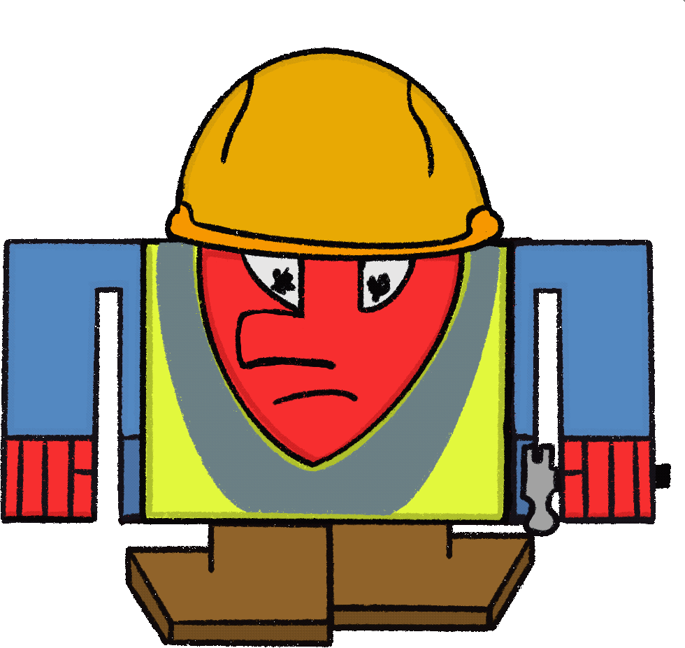
September 2025
Boss Fight
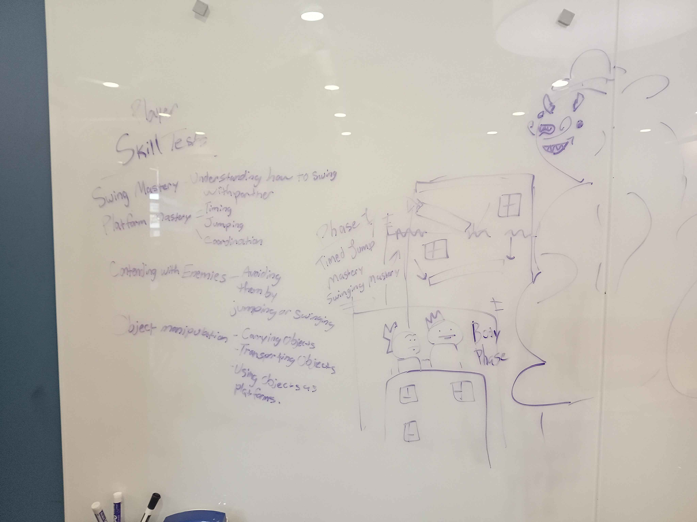
- Given our consistent pace, it felt appropriate to look further ahead into the development. So we started to plan out our first boss fight and chronicle more of how the first world of the game will unfold.
- This also gave me much more time to work directly on the art of the project, on top of organization and programming.
October 2025
Preparing for 2nd GDC
- I applied to the IGA conference, a sub-section of GDC that could get a lot of visibility if we are a finalist in any of the categories. We specifically targeted the student award.
- I also started making more promotional art for the game and started to work on planning out our social media, planning to take advantage of this potential publicity.
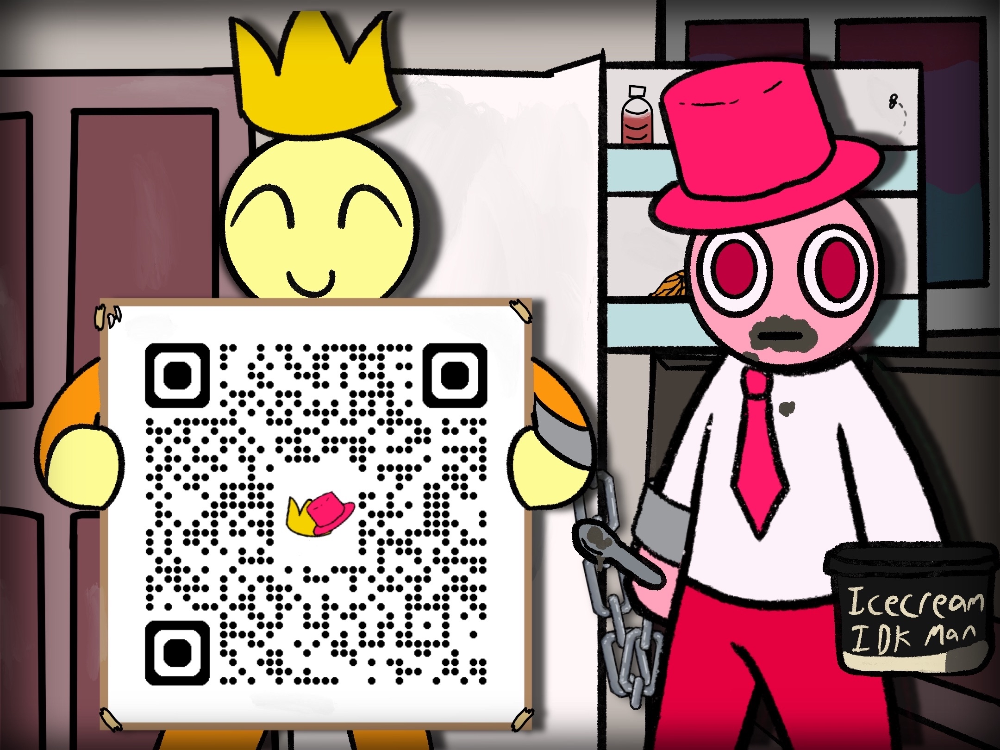
November 2025
Revisiting Clarity
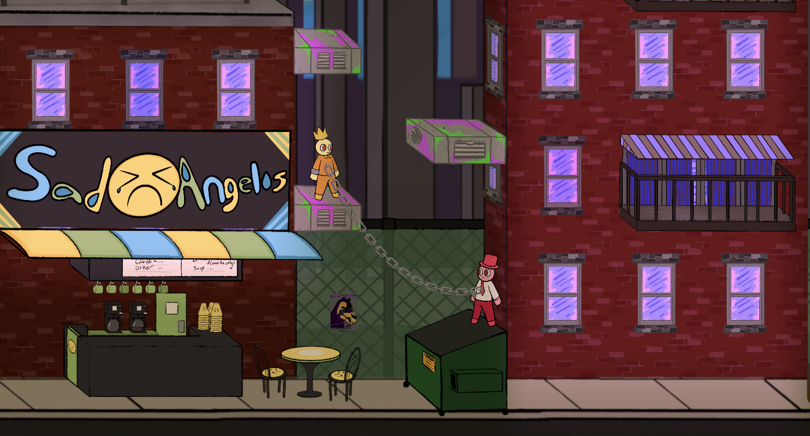
- In the past year, since we really focused on the readability of the game, the game looked completely different. So I took the whole month to focus solely on color clarity and readability, ensuring the game is accessible to as many people as possible.
- This came at the same time as I was focusing on finishing up more of the promotional material as well.